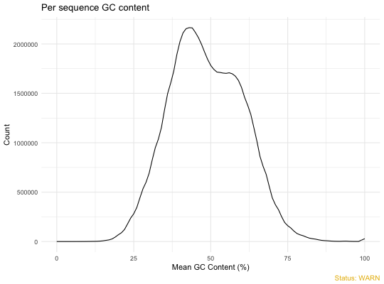
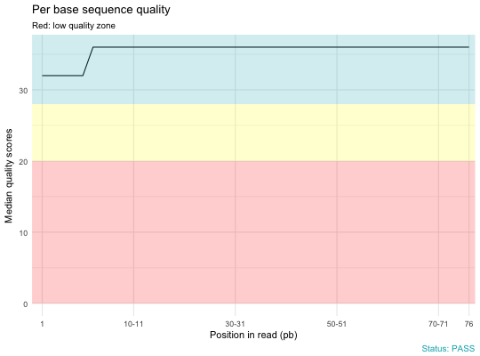
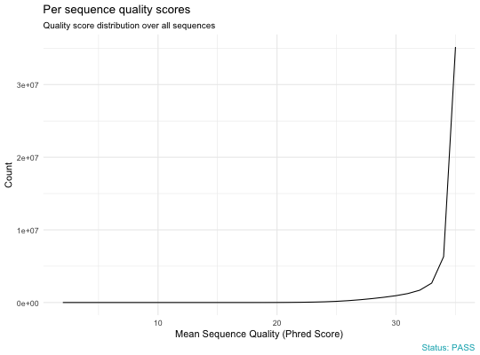
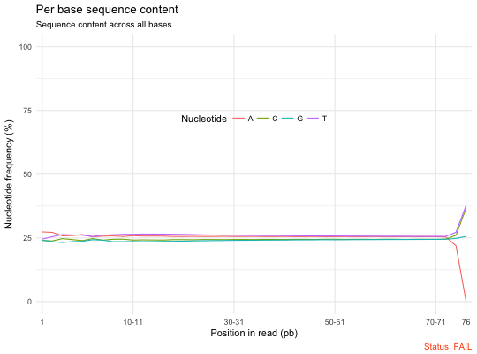
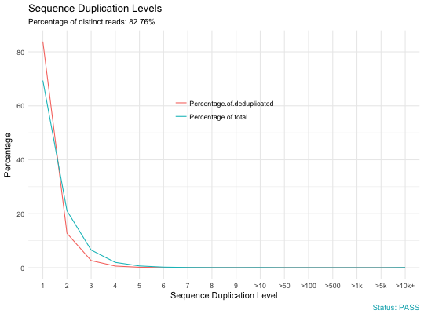

Plot FastQC data
qc_plot(qc, modules = "all")
# S3 method for qctable
print(x, ...)
Arguments
- qc
- An object of class qc_read or a path to the sample zipped fastqc result file.
- modules
- Character vector containing the names of fastqc modules for
which you want to import the data. Default is all. Allowed values include
one or the combination of:
- "Summary",
- "Basic Statistics",
- "Per base sequence quality",
- "Per sequence quality scores",
- "Per base sequence content",
- "Per sequence GC content",
- "Per base N content",
- "Sequence Length Distribution",
- "Sequence Duplication Levels",
- "Overrepresented sequences",
- "Adapter Content",
- "Kmer Content"
Partial match of module names allowed. For example,
you can use modules = "GC content", instead of the full names modules = "Per sequence GC content".
- x
- an object of class qctable.
- ...
- other arguments.
Value
Returns a list of ggplots containing the plot for specified modules..
Examples
# Demo file
qc.file <- system.file("fastqc_results", "S1_fastqc.zip", package = "fastqcr")
qc.file
#> [1] "/Users/kassambara/Documents/R/MyPackages/fastqcr/inst/fastqc_results/S1_fastqc.zip"
#> Reading: /Users/kassambara/Documents/R/MyPackages/fastqcr/inst/fastqc_results/S1_fastqc.zip
# Plot per sequence GC content
qc_plot(qc, "Per sequence GC content")

# Per base sequence quality
qc_plot(qc, "Per base sequence quality")

# Per sequence quality scores
qc_plot(qc, "Per sequence quality scores")

# Per base sequence content
qc_plot(qc, "Per base sequence content")

# Sequence duplication levels
qc_plot(qc, "Sequence duplication levels")
